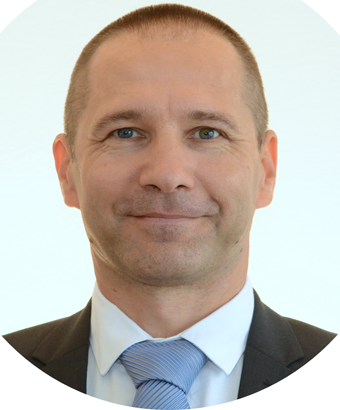

Ciljevi & oblasti
Zahvala recenzentima
Naša vodeća ideja bila je da otvorimo vrata naše institucije ljudima koji nose duh nauke i dolaze iz celog sveta, kako bi mogli da objavljuju i otkrivaju svoja otkrića u nauci o sportu.
Naš cilj i djelokrug je da kroz ovaj časopis obogatimo sebe i druge, a pre svega novim saznanjima iz oblasti sporta, fizičkog vaspitanja i rekreacije.
Časopis SportLogia pokriva oblasti sporta i fizičkog vaspitanja. Izlazi dva puta godišnje u jednom volumenu godišnje do 2014. (svakog juna i decembra) i u jednom broju godišnje od 2015. (decembar) i objavljuje originalne naučne radove, recenzirane naučne radove, prezentacije naučnih skupova, kratke naučne članke i stručne članke iz oblasti sporta, fizičkog vaspitanja, rekreacije, kineziološke antropologije, metoda treninga, sportske biologije i vježbanja, medicine sporta, istorije sporta i sportskog menadžmenta. kao i priloge iz drugih nauka (medicine, sociologije, psihologije, filozofije, egzaktnih nauka i matematike) primjenjenih u sportu.
Časopis SportLogia je časopis otvorenog pristupa od 2010. godine, sa procesom dvostruke slijepe recenzije, koji izdaje Univerzitet u Banjoj Luci, Fakultet fizičkog vaspitanja i sporta.
Autorska prava i licenciranje
Sportlogia časopis koristi CC BY-NC licencu. https://creativecommons.org/licenses/bi-nc/4.0/

Svi članci se mogu besplatno preuzeti i koristiti u skladu sa navedenom licencom.
Autori ne zadržavaju autorska i puna izdavačka prava bez ograničenja, ali časopis Sportlogia ne naplaćuje autorima bilo koji deo pripreme, održavanja i objavljivanja članka.
Ne postoje naknade za objavljivanje ili APC (naknade za obradu članaka).
Sportlogia časopis zadržava sva autorska i izdavačka prava.
 Rang lista kategorisanih naučnih časopisa u Republici Srpskoj
Rang lista kategorisanih naučnih časopisa u Republici Srpskoj
Glavni urednici od osnivanja časopisa:
Prvi glavni urednik, tada Glasnika Fakulteta fizičkog vaspitanja i sporta, je bio Prof.dr. Simo Vuković. Tom prilikom su izašla tri jednogodišnja broja i to:
Vol.1, br.1, 2005
Vol.2, br.1, 2006
Vol.3, br.1, 2007 i
Vol.4, br.1, 2008 (glavni urednik Prof .dr. Goran Bošnjak)
U razdoblju od januara 2011 -te do decembra 2015 -te, glavni urednik časopisa je bio Prof. dr. Slobodan Simović. Tokom tog perioda izašla su sljedeća izdanja:
Vol. 7, broj1, Jun 2011 i Vol. 7, broj2, Decembar 2011
Vol. 8, broj 1, Jun 2012 i Vol. 8, broj 2, Decembar 2012
Vol. 9, broj 1, Jun 2013 i Vol. 9, broj 2, Decembar 2013
Vol. 10, broj 1, Jun 2014 i
Vol. 10, broj 2, Decembar 2014 (samo na Engleskom jeziku)
Vol. 11, broj 1, Jun 2015 (samo na Engleskom jeziku).

U razdoblju od januara 2016 do31.05 2022 godine, glavni urednik časopisa je bioProf. dr. Goran Bošnjak. Sva izdanja su dvojezična (na srpskom i/ili lokalnim jezicima, i engleskom jeziku). Časopis izlazi jednom godišnje. Tokom ovog perioda izašla su sljedeća izdanja:
Vol. 6, broj 1, Juli 2010 (samo na srpskom i/ili lokalnim jezicima),
te sljedeća dvojezična izdanja (sa engleskim jezikom):
Vol. 6, broj 2, Decembar 2010
Vol. 12, broj 1, Juni 2016.
Vol. 13 broj 1, Juni 2017.
Vol. 14 broj 1, Juni 2018.
Vol. 15, broj 1, Decembar 2019.
Vol. 16, broj 1, Decembar 2020 i izdanje u pripremi
Vol.17, broj 1, Decembar 2021

Od 01.06 2022 godine, novi glavni urednik časopisa je Prof. dr. Igor Vučković
UREDNICI
Fakultet Fizičkog Vaspitanja i Sporta Univerzitet u Banjoj Luci |
Urednik |
 Izvršni urednik
Izvršni urednik Naučno stručni urednik
Naučno stručni urednik
|
 Sekretar časopisa
Sekretar časopisa Urednik
Urednik  Urednik
Urednik  Urednik
Urednik Web - Urednik & administrator
Web - Urednik & administrator